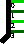
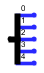

Разветвитель
Разветвитель
| Библиотека: | Монтаж |
| Введён в: | 2.0 Beta 1 (в библиотеке Базовые, перемещён в библиотеку Монтаж в 2.7.0) |
| Внешний вид: |
 |
Поведение
Разветвитель предназначен для разделения многобитной шины на отдельные проводники (или более узкие шины), а также для их объединения в одну общую шину. Несмотря на название, он работает в обоих направлениях: может как разделять сигналы, так и объединять их. Более подробное описание приведено в разделе «Разветвители» Руководства пользователя.
Logisim обрабатывает разветвители особым образом: в отличие от большинства других компонентов, вносящих задержку при моделировании, сигналы через разветвители (как и через обычные проводники) проходят мгновенно.
Примечание: Термин «разветвитель» не является общепринятым стандартом в электронике; он специфичен для Logisim. В технической литературе для подобных элементов чаще используется термин «делитель шины» (bus ripper).
Контакты
Чтобы различать разные стороны разветвителя, общую точку подключения называют шиной, а группу отдельных точек подключения с другой стороны — разделёнными концами.
| Шина |

|
Разделённые концы |
- Шина:
- Разрядность шины соответствует атрибуту Разрядность входа и определяет суммарное количество проводников в шине.
- Разделённые концы:
- Количество разделённых концов задается атрибутом Разветвление. Разрядность каждого из них определяется автоматически путём целочисленного деления разрядности шины на число разветвлений. Неполная часть распределяется сбалансированным образом. Например, шина разрядностью 10 бит при значении разветвления 4 будет разделена на два вывода по 3 бита и два вывода по 2 бита.
Атрибуты
Когда компонент выбран или добавляется, цифровые клавиши от 0 до 9 меняют его атрибут Разветвление, комбинации клавиш от Alt-0 до Alt-9 меняют одновременно и Разветвление, и Разрядность входа, а клавиши со стрелками меняют его атрибут Направление.
- Направление
- Расположение разделённых концов относительно объединённого конца (шины).
- Разветвление
- Количество разделённых концов.
- Разрядность входа
- Разрядность общей шины.
- Внешний вид
-
Определяет способ отображения разветвителя на схеме:
-
Левосторонний
(Left-handed) — по умолчанию. Отрисовывает стержень, уходящий влево от объединенного конца, с подписанными отводами к каждому разделенному концу. -
Правосторонний
(Right-handed) — то же самое, но стержень уходит вправо (при взгляде в направлении атрибута Направление). -
По центру
(Centered) — стержень располагается симметрично по обе стороны от точки подключения шины. -
Классический
(Legacy) — отрисовывает диагональные линии к каждому концу без подписей битов; используется для совместимости с файлами старых версий (созданными до версии 2.7.0).



Левосторонний Правосторонний По центру Классический -
- Интервал
- Определяет расстояние (шаг) между разделёнными концами.
- Бит x
-
Определяет индекс разделённого конца, к которому относится бит x общей шины.
Выводы нумеруются с 0 сверху вниз (для разветвителей, направленных вправо или влево)
или слева направо (для разветвителей, направленных вверх или вниз). Любой бит можно временно
отключить, выбрав вариант «Нет». Один и тот же бит не может быть назначен нескольким выводам одновременно.
Чтобы не настраивать каждый бит вручную, можно воспользоваться контекстным меню разветвителя (вызывается правой кнопкой мыши). Меню содержит командыРасставить по возрастанию
иРасставить по убыванию
, которые автоматически распределяют биты шины по доступным выводам максимально равномерно.
Поведение Инструмента «Нажатие»
Не предусмотрено.
Назад к Справке по библиотеке